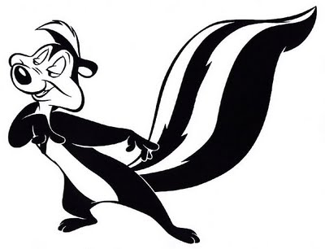

Master of Woo: Pepé Le Pew
Pepé Le Pew, who burst on the scene in France in 1945, is the walking embodiment of old school charm. This devilishly handsome woo'er is admired for his unbridled confidence and eternal optimism. Pepé knows that the answer to "What should I wear?" is the always a classicly minimalist black-and-white. He complements his roguish smile with perfectly coiffed hair. (Pro tip: Gel is key to that perfect swoosh!) He takes full advantage of his alluring foreign accent, at once thrilling and musical to the untrained ear. Yet Pepé knows, as do all woo'ers, that the thrill of the foreign must be tempered with the familiar, hence his adoption of the English spelling of his name.